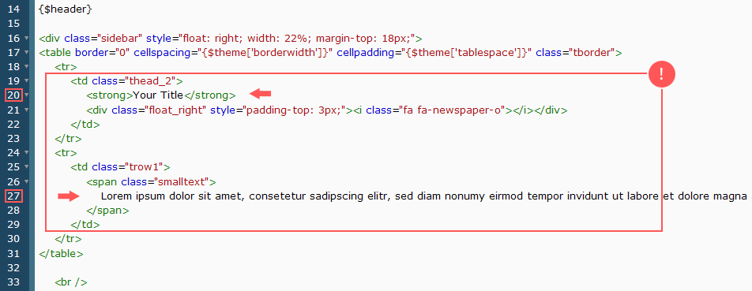

In order to install and setup the Flatty Theme properly you should defenitely take a look into this guide and follow all mentioned steps and instructions as good as possible. If you know what you're doing and what you need to do then you can skip this guide of course. If you have problems nevertheless then dont hesitate to ask for help via private message, or creating a threadat the MyBB support forums for further help. In case you like this theme, feel free to recommend it. Thanks.
» Editing the Sidebar // "Your Title" content
1.) Go to your Admin CP » Templates & Styles » Templates » Flatty Templates » Index Page Templates » Index

The necessary rest you might need can be found in the index_stats template.